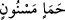

orada kırk sene kalmıştır. Sonra onu, “
/şekillenmiş kara balçıktan” yaratmış ve
bundan sonra bir kırk yıl daha orada kalmıştır. Ardından “salsal/kuru çamur”dan
yaratmış ve bir kırk yıl daha orada kalmıştır. Böylece Âdem’in yaratılışı yüz yirmi
senede tamamlanmıştır. Ardından Allah, Dahhak’ın İbn Abbas (r.a.)’dan rivâyet ettiği
ifâdede yer aldığı üzere ona ruh üfürmüştür. Âdem’in yaratılışında geçen seneler onun
çocuklarında “gün” şeklinde cereyan etmiştir.
Bâzı âlimler, bu sûrede geçen birinci “insan” kelimesi ile Hz. Âdem’in ikincisi ile de
çocuklarının kasdedildiğini söylemişlerdir. Bu açıklamaya göre âyette yer alan “hıyn”
mikdârı bilinmeyen uzun bir zaman dilimi olur. Ancak birinci tefsir; yâni her iki yerdeki
insan kelimesinin “insan cinsi” olduğu yolundaki yorum daha ağır basmaktadır. Çünkü
âyetin sevkinden maksad; insanoğluna yaratılışının keyfiyetini hatırlatmaktır. Çünkü
insanoğlu başta anılmaya değer hiç bir şey olduğunu ya da sonunda anılmaya değer bir
şey olduğunu, hakir ve değersiz bir sudan yaratıldığını hatırlamıyordu. İşte âyet bunu
hatırlatmak için getirilmiştir. Tâ ki -daha önce geçtiği üzere- insan öldükten sonra
dirilmeyi uzak bir ihtimâl görmesin.
“Emşâc” kelimesini ele alacak olursak bu kelimenin anlamı -tercümede gösterildiği
üzere- “katışık ve karışık” demektir.
Âyet-i kerîmede “nutfe” kelimesi müfred/tekil getirilirken, ona sıfat olan “emşâc”
kelimesi çoğul getirilmiştir. Bunun bir sebebi olmalıdır. Çünkü kural; mevsuf tekil ise
sıfatın da tekil olması yolundadır. Burada mevsuf tekil, sıfat çoğul getirilmiş ama
kuralın dışına çıkılmamıştır. Çünkü “nutfe” kelimesinden maksad, ana rahminde
birbirine karışan kadınla erkeğin sularıdır. Herbirinin kendilerine özgü özellikleri
vardır. Bu iki sudan her birinin rengi, inceliği, kalınlığı birbirinden farklıdır. Ayrıca
farklı özellik ve yapıdadır. Çünkü erkeğin suyu; beyaz ve katıcadır. Bu suda “bağlama”
gücü vardır. Kadının suyu ise sarı ve incedir, bunda da “bağlanma” gücü vardır. İşte bu
iki sudan çocuk yaratılır. Bunların hangisinin özelliği diğerine baskın gelirse doğacak
çocuk ona “benzer” olur. Çocuktaki sinir, kemik ve güç babanın suyundan; et, kan ve saç
annenin suyundan oluşur. Nitekim Peygamber Efendimiz’den bize kadar ulaşan merfû
hadislerden bunu anlıyoruz. Bir başka hadis-i şerifte şöyle buyrulur: “Dünyaya gelen
hiçbir çocuk yoktur ki onun nutfesi üzerine, alındığı çukurun toprağı serilmemiş
olsun. Bu iki nutfeden herbiri diğerine karışmış durumdadır.”
Hasan Basrî (rh.) bu “katışık”lığı menînin hayız kanıyla karışması tarzında anlamıştır.
Ona göre kadın hâmile kaldığı zaman hayzı durur ve kan meni ile karışır. Nitekim
Kamus müellifi de bu kanâate varmıştır. Çünkü o eserinde “nutfetun emşac” ifâdesini
kadının suyu ve kanı ile karışmış nutfe, menî şeklinde ifâde etmiştir. Buna göre kadın ve
erkeğin suyu ile kadının kanı birbirine karışmış olmaktadır.
Râğıb İsfahânî ise “nutfetun emşâc” ifâdesine daha farklı bir açıdan yaklaşmış, bunun
Allah’ın o nutfede yarattığı çeşitli güçler anlamına olduğunu söylemiştir. Bu güçlere şu
âyetlerde işâret olunmaktadır: “Andolsun biz insanı, çamurdan (süzülüp çıkarılmış)
bir özden yarattık. Sonra onu sağlam bir karargahta nutfe hâline getirdik. Sonra